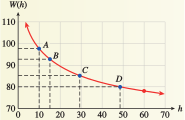

Subsection 5.6 Solving Equations
According to the third law of exponents, when we raise a power to another power, we multiply the exponents together. In particular, if the two exponents are reciprocals, then their product is \(1\text{.}\) For example,
This observation can help us to solve equations involving fractional exponents. For instance, to solve the equation
we raise both sides of the equation to the reciprocal power, \(3/2\text{.}\) This gives us
The solution is \(8\text{.}\)
Example 5.6.14.
Solve \(~~(2x + 1)^{3/4} = 27\)
We raise both sides of the equation to the reciprocal power, \(\dfrac{4}{3}\text{.}\)
Checkpoint 5.6.15.
Solve the equation \(3.2z^{0.6} - 9.7 = 8.7\text{.}\) Round your answer to two decimal places.
Investigation 5.6.1. Vampire Bats.
Small animals such as bats cannot survive for long without eating. The graph below shows how the weight, \(W\text{,}\) of a typical vampire bat decreases over time until its next meal, until the bat reaches the point of starvation. The curve is the graph of the function
where \(h\) is the number of hours since the bat’s most recent meal. (Source: Wilkinson, 1984)

- Use the graph to estimate answers to the following questions: How long can the bat survive after eating until its next meal? What is the bat’s weight at the point of starvation?
- Use the formula for \(W(h)\) to verify your answers.
- Write and solve an equation to answer the question: When the bat's weight has dropped to \(90\) grams, how long can it survive before eating again?
-
Complete the table showing the number of hours since the bat last ate when its weight has dropped to the given values.
Weight (grams) \(97.5\) \(92.5\) \(85\) \(80\) Hours since eating \(\) \(\) \(\) \(\) Point on graph \(A\) \(B\) \(C\) \(D\) -
Compute the slope of the line segments from point \(A\) to point \(B\text{,}\) and from point \(C\) to point \(D\text{.}\) Include units in your answers.
 - What happens to the slope of the curve as \(h\) increases? What does this tell you about the concavity of the curve?
- Suppose a bat that weighs \(80\) grams consumes \(5\) grams of blood. How many hours of life does it gain? Suppose a bat that weighs \(97.5\) grams gives up a meal of \(5\) grams of blood. How many hours of life does it forfeit?
- Vampire bats sometimes donate blood (through regurgitation) to other bats that are close to starvation. Suppose a bat at point \(A\) on the curve donates \(5\) grams of blood to a bat at point \(D\text{.}\) Explain why this strategy is effective for the survival of the bat community.